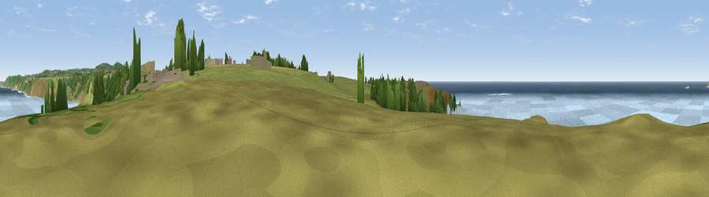

Viewpoint near Sennen Cove
#11274 in England · top 48% of its area beats it · near Sennen CoveThe view, rendered

A 360° render of this exact spot computed from the terrain model, tree cover and land cover — summer colours, afternoon light, calibrated against photographs of famous viewpoints. Real trees, hedges and buildings will differ in detail.
The panorama
Grey silhouette: terrain skyline in each direction (720 bearings, Earth curvature and refraction included). Dashed green: skyline with trees (+15 m) and buildings (+8 m) as obstacles. Blue strip: how far the ground is visible on each bearing.
Where the view opens
Wedge length = distance to the farthest visible ground on that bearing (vegetation-aware). Rings at 10, 25 and 50 km.
What fills the view
78% water · 15% grassland · 4% woodland · 1% cropland ·
Angular shares of the visible panorama (visual magnitude), not map area. Landscape diversity 0.32 (0–1 Shannon).
Key numbers
More beautiful places nearby
The staircase of upgrades: each row has a higher view potential than everything closer. Driving times are estimates from straight-line distance, calibrated against real road routing — check an actual route before setting out.
| Place | Direction | Drive | Score |
|---|---|---|---|
| Viewpoint near Sennen | SSW · 1 km | ~4 min | 62.7 |
| Viewpoint near Sennen | S · 2 km | ~5 min | 63.5 |
| Viewpoint near Sennen Cove | NE · 2 km | ~5 min | 67.2 |
| Viewpoint near Bosavern | NNE · 3 km | ~7 min | 69.8 |
| Viewpoint near Bosavern | ENE · 4 km | ~9 min | 82.4 |
| Viewpoint near Morvah | NNE · 12 km | ~22 min | 83.2 |
| Viewpoint near Porthmeor | NNE · 12 km | ~23 min | 84.8 |
| Rosewall Hill | NE · 19 km | ~32 min | 88.0 |
50.07557, -5.70550 · source: screening · position refined by local search. Computed location — check access rights before visiting.